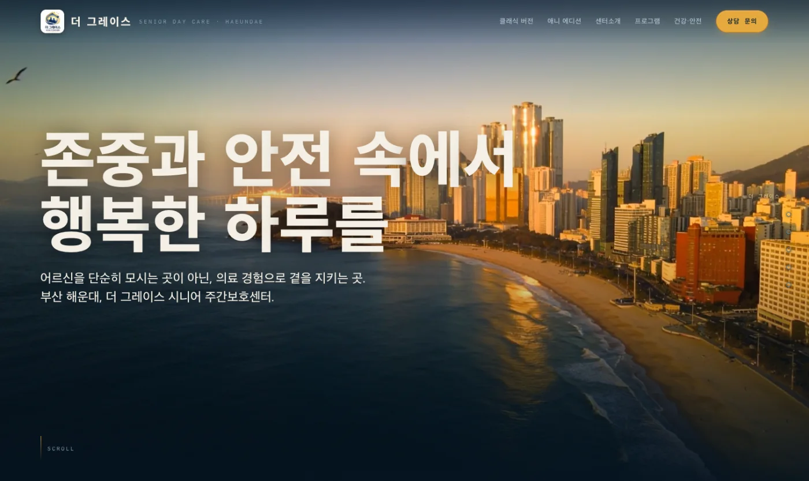

무엇을 먼저
말할지
고객이 가장 먼저 알아야 할 가치와 다음 행동을 정보 구조로 정리합니다.
ALEXSOFT / BRAND WEBSITEDIGITAL EXPERIENCE · 2026
템플릿을 꾸미는 작업이 아닙니다. 어떤 인상을 남기고, 어떤 정보가 신뢰를 만들며, 어떻게 문의로 이어질지를 하나의 경험으로 설계합니다.

프로젝트의 목표와 콘텐츠, 페이지와 기능 범위를 확인한 뒤 작업 범위와 견적을 함께 제안합니다.
브랜드 웹사이트의 역할
좋은 브랜드 웹사이트는 정보를 나열하지 않습니다. 고객이 회사를 이해하는 순서를 정하고, 말투와 이미지, 여백과 움직임이 같은 태도를 갖도록 만듭니다.
고객이 가장 먼저 알아야 할 가치와 다음 행동을 정보 구조로 정리합니다.
타이포그래피, 색, 이미지와 여백이 하나의 브랜드 언어로 작동하게 합니다.
반응형, 성능, 접근성, 검색 노출과 배포 이후의 변경까지 고려해 완성합니다.
실제 공개 프로젝트
더 그레이스 시니어 주간보호센터의 다섯 편의 시네마틱 장면이 스크롤에 맞춰 이어집니다. 단순한 시설 소개가 아니라 가족이 신뢰를 느끼는 순서와 운영자가 직접 에디션을 바꿀 수 있는 배포 흐름까지 설계했습니다.
실제 사이트 방문하기 ↗제작 범위와 기준
예산에 맞춰 페이지 수를 채우기보다, 브랜드가 지금 해결해야 할 목표와 필요한 범위를 먼저 분명히 정합니다.
제작 과정
도구가 빨라질수록 판단과 검수의 밀도가 결과를 가릅니다. 각 단계의 결정이 다음 단계에 그대로 이어지도록 진행합니다.
고객, 핵심 메시지, 필요한 페이지와 기능을 확인하고 일정과 견적을 확정합니다.
정보구조와 콘텐츠 흐름을 정리해 고객이 이해하고 행동하는 경로를 만듭니다.
타이포그래피, 색, 이미지와 움직임을 조율해 전체 사이트가 따를 시각 언어를 확정합니다.
반응형 개발, 상호작용, 성능과 접근성을 검수한 뒤 실제 운영 환경에 배포합니다.
배포 이후의 기준
30 DAYS제작 오류 무상 보증합의한 범위가 정상적으로 작동하도록 바로잡습니다.
BY REQUEST변경은 건별 사전 견적문구·이미지 변경과 신규 페이지·기능은 내용을 확인한 뒤 진행합니다.
YOUR ASSET도메인과 호스팅 직접 소유운영 비용과 계정은 고객이 직접 확인하고 통제할 수 있게 합니다.
자주 묻는 질문
페이지 수, 콘텐츠 준비 상태, 필요한 기능과 인터랙션을 함께 확인한 뒤 작업 범위와 견적을 제안합니다. 처음부터 모든 기능을 넣기보다 지금 가장 필요한 경험부터 시작할 수 있습니다.
아닙니다. AI와 생성형 이미지는 필요한 제작 단계에서 도구로 활용하지만, 정보구조·아트디렉션·디자인·개발과 검수는 프로젝트 목적에 맞춰 직접 판단합니다.
기본 원고를 정리하는 범위는 협의할 수 있습니다. 전문 카피라이팅, 브랜드 촬영과 대규모 이미지 제작이 필요하면 별도 범위로 견적합니다.
운영 방식과 필요한 기능에 따라 가장 적합한 방식을 선택합니다. 특정 도구 사용이 목적이 아니라 디자인 품질, 운영 편의와 장기 비용을 함께 판단합니다.
자주 바뀌는 콘텐츠가 있다면 시작 전에 CMS 또는 운영 방식을 범위에 포함합니다. 정적 사이트는 코드와 배포 계정을 고객이 소유하며 변경이 필요할 때 별도 요청할 수 있습니다.
프로젝트 문의
완벽한 기획서를 준비하지 않아도 됩니다. 현재 사이트의 문제와 새 사이트가 만들어야 할 변화를 알려주세요. 내용을 검토한 뒤 20분 확인 일정을 안내합니다.
alexsoft.kr@gmail.com